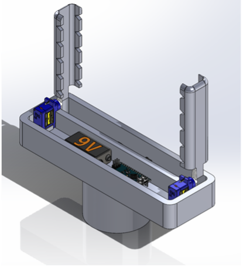
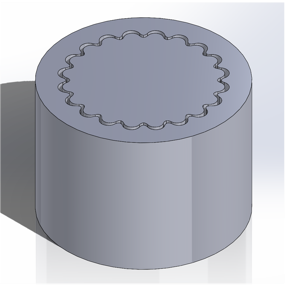
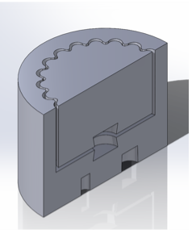
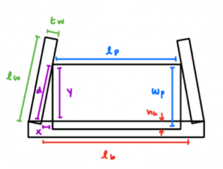
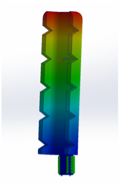
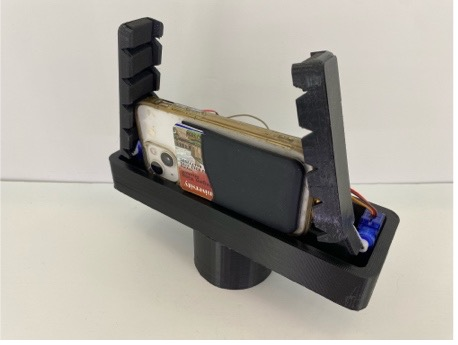

Tripod Attachment
Designing an assistive tripod attachment that automates phone mounting and reduces force and dexterity needed for positioning.
Overview
In a team of three, we developed an assistive tripod attachment for users with cerebral palsy and wrist tendonitis. I contributed to the sensor-triggered gripping concept and analyzed the compliant TPU wings under servo loading.
The prototype combined automatic phone gripping with a compliant toothed interface for orientation adjustment. Testing exposed two integration issues: an unreliable glued wing connection and a phone slot that was too narrow.

Design
User research identified difficulty gripping phones, operating small mounting screws, and making precise adjustments. We translated these findings into two functions: securing the phone automatically and adjusting orientation without repeatedly loosening a screw.
I helped develop the concept of an IR sensor triggering servo-driven wings. We paired this with a manually adjustable rotating base.
We added foam for phone fit and selected TPU wings with cutouts to accommodate different shapes. Rounded teeth in the rotating interface were intended to deform during adjustment and engage at the selected position.
An IR sensor detects the phone and triggers micro servos to rotate two wings inward. The padded base supports the phone, while the wings provide lateral retention.
TPU and cutouts give the wings compliance. Their geometry must balance accommodation of the phone with sufficient retention under servo loading.

The rotating base pairs a flexible TPU inner interface with a rigid outer part. Rounded teeth deform as the user turns the holder and re-engage to retain its orientation.


Analysis & Validation
I estimated a 2.97 N load on each wing from the servo torque and geometry. A simplified bending calculation predicted a maximum stress of 2.45 MPa and a factor of safety of 21.4.
FEA under the modeled load predicted a maximum stress of 10.2 MPa and a factor of safety of 5.1. Local stress concentrations and simplified hand-calculation geometry may explain the difference. The comparison highlighted the need to evaluate the wing geometry and material assumptions beyond a simple beam model.


Fabrication & Iteration
We assembled 3D-printed parts with micro servos, an IR sensor, magnets, and an Arduino Nano to evaluate gripping, phone fit, and the rotating interface.
The glued wing-to-servo-horn connection was not robust, and the foam-lined slot prevented the phone from seating fully. These issues limited the prototype’s ability to demonstrate the intended interaction.
The next iteration would widen the phone slot and replace the adhesive wing connection with a mechanically retained interface. Measuring adjustment force and testing with users would establish whether the design reduces effort.
Manufacturing & Cost
We proposed molded TPU for the wings and inner rotating interface, with rigid plastic for the base and outer interface. Injection molding was considered for production rather than the printed prototype.
Using component quotations at a sample quantity of 50 units and purchased electronics, we estimated a unit cost of $58.18. The estimate would need review for tooling, assembly, and the final material and process choices.
Results
We built a prototype of the sensor-triggered gripping mechanism and compliant rotating interface. Testing identified specific changes to phone clearance and servo attachment before further functional and user evaluation. Reduced adjustment force and reliable retention remain to be measured.
